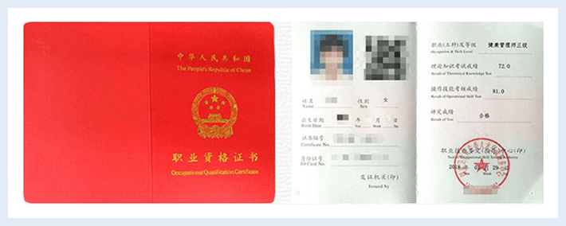

导航
MENU
官网首页
学院首页
课程中心
报考中心
学院动态
学员天地
管理师资
关注中鹏
2017年2月人力资源社会保障部《关于职业资格目录清单公示内容调整情况的说明》正式将健康管理师列入水平评价类职业资格目录，由卫计委（卫健委）负责具体的考核鉴定工作。
哪些人适合考健康管理师证？
各级疾病预防控制中心专业人员
社区卫生服务人员，各种体检中心、健康管理（咨询）公司、保
险公司工作人员、各单位人事部门负责健康管理人员
大中小学校校医
医学院校应届、往届毕业生
各制药公司、保健品公司产品讲师、产品推销
从事或准备从事健康管理相关职业的人员
对健康管理相关知识有兴趣的人员
健康管理师（三级）报名条件
（满足以下条件之一）
具有医药卫生专业大学专科以上学历证书
具有非医药卫生专业大学专科以上学历证书，连续从事本职业或相关职业2年以上
具备医药卫生专业中等专业以上学历证书，连续从事本职业或相关职业工作3年以上
咨询详情
报名材料
身份证正反两面扫描件
最高学历扫描件
二寸个人白底证件照片
健康管理师报名申请表格
医卫行业工作经验证明2-3年
姓名：
电话：
申请预报名
1
本职业持证率越来越高，证书已经成为从事健康管理师工作必备敲门砖。
了解详情>>
2
国家实行学历和职业资格并重的政策，即使有健康管理师专业相关学历，也仍然需要职业资格证书。
了解详情>>
3
健康管理师从业人员需面对众多行业高管，亟需专业知识及技能为自身专业形象加分。
了解详情>>
4
从业人员绝大多数具有相关学历及专业知识，需要健康管理师职业资格证书为自己加分。
了解详情>>
5
具备丰富经验的健康管理师人员必然要向综合管理方向发展，需要系统的健康管理师专业知识支持。
了解详情>>
6
从业人员希望长期在此领域专业发展，因此愿意不断投入，提升自己增加竞争力。
了解详情>>
考健康管理师证 你还可以
领补贴
凭资格证书
可申请相应的补贴
咨询详情
加积分
凭健康管理师证书可增加积分
助你拿到所居住城市绿卡
咨询详情
评职称
健康管理师资格证书是
调级评职称的重要证书依据
咨询详情
健康管理师就业范围广泛
全国存在至少1000万人才缺口
健康管理跨越基础医学、营养学、心理学、中医学、运动学、康复学及慢病管理等多学科，健康管理师是健康产业最紧缺的复合型人才！我国至少存在1000万健康管理专业人才的缺口，就业范围包含：
各级医院、妇幼保健院、疾病预防控制中心、社区卫生服务中心、体检中心
企业、学校及事业单位卫生医疗机构
老年人服务机构
健康教育所及有关机构
健康类产品公司和其它保健品公司、医药代表等
健康管理公司、健康咨询中心、康体中心、养生中心
私人健康顾问、私人保健医生、私人健康管理师、社区健康管理工作室等
为什么选择中鹏 三大理由
让0基础的您少些担心
习题集，重难点资料！教材配合习题集，通过做题带出相关知识点，强化阶梯方法技巧；重难点资料浓缩考点，梳理考试核心内容！
专职班主任，全程跟踪服务，随时提问，及时解答，学习更明确，技能更熟练。您只需学习考试。其余事无需担忧！
15年老品牌教育机构，培训经验丰富，通过率高，报名前可免费试听课程，觉得满意再报名，解决后顾之忧!
姓名：
电话：
申请免费试听
健康管理师考证 你关注的问题都在这里
报考条件
不清楚健康管理师的报考条件是什么？ 不知道如何节省时间精力， 高效学习?
点击了解
课程与体系
行业通篇一律的考证基础课？真正的科学课程体系： 基础学习-实操提升-技能实践
点击了解
就业前景如何
健康管理师遍布各个行业，小到体质体检收集，大到诊所保健养生治疗、家庭医生。专业健康管理师人才队伍缺口大！
点击了解
健康管理师学什么？
健康教育与促进、健康信息采集、健康风险评估、 健康行为干预等
点击了解
学费贵不贵？
为推进营养健康行业人才建设，特推出优秀学员补贴申请机制。
点击了解
健康管理师通过率
科学教学师资配比班主任督学跟踪，系统教辅资料、 历年真题集、错题本练习，学习掌握程度，提早先 知！
点击了解
证书颁发
考试合格者，由中华人民共和国人力资源和社会保障部 国家卫生计生委人才交流服务中心颁发国家职业资格等级证书，全国通用。
